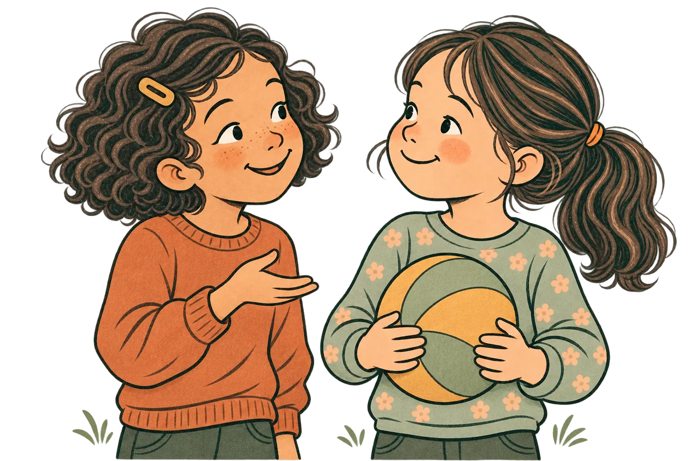

הילדים מדברים.
אתם בוחרים.
בוחרים אילו קבוצות ווטסאפ יהיו זמינות בטאבלט או במחשב, וכך הבנות יכולות להתכתב עם החברות בלי להיחשף לשאר השיחות שלכם ובלי לקחת לכם את הטלפון.
הורדה והתקנה ל־Windowsנועה רוצה לכתוב לחברות. ההורים בוחרים אילו קבוצות יהיו זמינות לה, ונועה נכנסת לחשבון שלה בטאבלט. היא קובעת עם החברות להיפגש בפארק, וההודעה מגיעה אליהן בווטסאפ עם השם שלה.
התקנה, דרישות ושאלות נפוצות
מה צריך בבית?
יחד רצה על מחשב עם Windows 11 בגרסת 64 ביט. המחשב צריך להישאר דולק ומחובר, והטאבלט או המחשב שממנו הילדים נכנסים צריך להיות באותה רשת ביתית. גרסת Linux בהכנה.
ההודעות והתמונות נשמרות מוצפנות במחשב שבבית. אפשר להגדיר מכסת זמן לכל ילד, להוסיף דקות או להשהות גישה.
איך מתקינים?
- מורידים ומפעילים את המתקין במחשב. הקובץ שוקל כ־130 MB ונדרשות הרשאות מנהל.
- בסוף ההתקנה נפתח הדפדפן. יוצרים חשבון הורה, פותחים ״מכשירים מקושרים״ בווטסאפ בטלפון וסורקים את קוד ה־QR.
- יוצרים חשבון לכל ילד ובוחרים אילו קבוצות ושיחות יהיו זמינות לו.
אזהרת Windows SmartScreen
המתקין עדיין לא חתום. במסך האזהרה לוחצים על ״מידע נוסף״ (More info), בוחרים ״הפעל בכל זאת״ (Run anyway) ומאשרים את חלון ההרשאות.
לפני שמחברים חשבון
יחד היא פרויקט עצמאי שמשתמש בחיבור לא רשמי לווטסאפ. הוא עלול להפסיק לעבוד או להוביל להגבלה של החשבון. יחד אינה קשורה ל־WhatsApp או ל־Meta.
שאלות נפוצות
האם הילד צריך מספר טלפון או חשבון WhatsApp?
לא. הוא נכנס ליחד בשם ובסיסמה, וההודעות שלו יוצאות מהחשבון שלכם, עם התווית שקבעתם לו.
האם הילד רואה את כל השיחות שלי?
לא. בהתחלה אף שיחה לא מאושרת. אתם מסמנים קבוצות או שיחות אחת אחת, ויכולים לבטל או להשהות גישה בכל רגע.
ואני רואה מה הילד כותב?
כן. ההודעות יוצאות מהחשבון שלכם, ולכן הן מופיעות אצלכם בטלפון כמו כל הודעה אחרת, וגם ביחד.
מה קורה כשהמחשב כבוי?
הילדים לא יכולים להיכנס עד שהוא נדלק. ה־WhatsApp בטלפון שלכם ממשיך לעבוד כרגיל.
איך מתעדכנים לגרסה חדשה?
בהתקנה בוחרים: עדכון אוטומטי בזמן שלא משתמשים ביחד, או הודעה שמחכה לאישור שלכם. לפני כל עדכון נשמר גיבוי.
איך מסירים?
מהגדרות Windows, כמו כל תוכנה. כברירת מחדל המידע נשמר למקרה שתתקינו שוב, ואפשר לבחור במחיקה מלאה.
כמה זה עולה?
כלום. יחד היא פרויקט קוד פתוח, והקוד שלה פתוח לכל אחד ב־GitHub.